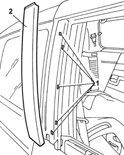
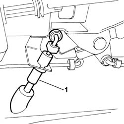
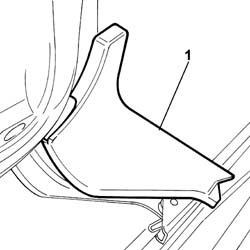
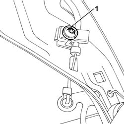
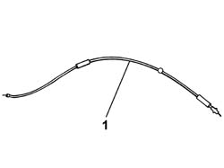

7020D65 SLIDING SIDE DOOR ROD S-R
- Path
- Procedures > 70 FITTINGS > 7020 LOAD COMPARTMENT DOORS > 7020D SLIDING SIDE DOOR CLOSURE DEVICES > 7020D65 SLIDING SIDE DOOR ROD S-R
- Kind
- repair procedure (removal / refitting; the operation number is the code)
- Applies to
- all engines; all production periods
- Interactive page
- https://sloeber94.github.io/elrnDB-fUlss/en/#/179007735
Applies to: all engines; all production periods
 Removing
Removing
 Refitting
RefittingOp. 5530B56 BATTERY DRIP TRAY COVER - R.R.
Disconnect the negative battery terminal.
1. Release the pillar trim from the retaining clips and remove it.

Applies to: all engines; all production periods
Op. 7050A90 REAR SEAT (ONE) - R RE - REPAIR WITH SEAT REMOVED
Op. 7020D32 SLIDING SIDE DOOR INTERIOR OPENING HANDLE/ESCUTCHEON (INTERIOR) - R.R.
Op. 7020C30 SLIDING DOOR INTERIOR PANEL LEFT OR RIGHT - R+R
Op. 7020C02 SLIDING SIDE DOOR WATER PROTECTION - R.R.
1. Disconnect the rear side door lock rod.

Applies to: all engines; all production periods
1. Release the plastic cover fastened to the lower door support from the clips and remove it.

Applies to: all engines; all production periods
1. Undo the bolt fastening/adjusting the rod on the rear side door lower support.

Applies to: all engines; all production periods
1. Remove the sliding side door safety device rod.

Applies to: all engines; all production periods
Refitting
RemovingRemove the rear side door safety device rod.
Tighten the bolt fastening/adjusting the rod on the rear side door lower support.
Attach the plastic cover fastened to the lower door support to the clips.
Connect the rear side door lock rod.
Op. 7020C02 SLIDING SIDE DOOR WATER PROTECTION - R.R.
Op. 7020C30 SLIDING DOOR INTERIOR PANEL LEFT OR RIGHT - R+R
Op. 7020D32 SLIDING SIDE DOOR INTERIOR OPENING HANDLE/ESCUTCHEON (INTERIOR) - R.R.
Op. 7050A90 REAR SEAT (ONE) - R RE - REPAIR WITH SEAT REMOVED
Fit the front pillar trim.
Fit the front pillar fastening clips.
Disconnect the negative battery terminal.
Topics linked from this page (6)
- 5530B56 BATTERY DRIP TRAY COVER - R.R.
- 7020D32 SLIDING SIDE DOOR INTERIOR OPENING HANDLE/ESCUTCHEON (INTERIOR) - R.R.
- 7020C02 SLIDING SIDE DOOR WATER PROTECTION - R.R.
- 7020C04 SLIDING SIDE DOOR - ADJUSTMENTS FOR CENTRING AND PROFILING - INCLUDES SEAL ADAPTATION IF NECESSARY
- 7020C30 SLIDING DOOR INTERIOR PANEL - R+R
- 7050A90 REAR SEAT (ONE) - R RE - REPAIR WITH SEAT REMOVED